Experiencia Sólida
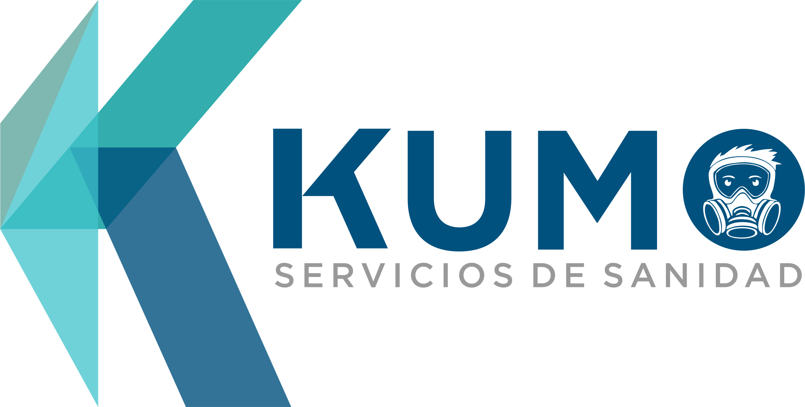
Kumo Servicios Especializados - Fundador y Gerente de Operaciones
2021 - 2026Lideré la operación integral de una empresa de servicios, siendo responsable de la planeación estratégica, gestión financiera y ejecución operativa, siendo algunos de los logros y responsabilidades: - Incremento de ingresos mensuales hasta en un 30% mediante la consolidación de cartera de clientes y seguimiento de los mismos. - Elaboración de expedientes para concursos mercantiles y/o licitaciones públicas. - Coordinación de equipos de hasta 15 personas, dentro de las principales industrias de la región. - Optimización de procesos operativos para mejorar eficiencia y manejo de recursos, reduciendo los costos operativos hasta en un 40% - Gestión directa de procesos de compra, desde almacén hasta proveedores. - Elaboración de reportes de proyectos y anexos técnicos para el expediente de cada cliente.
Integration Point Company - GTC (Global Trade Content Analyst)
2017 - 2020Participé en el análisis e investigación de regulaciones de comercio internacional, colaborando con equipos globales en un entorno corporativo. Mis principales responsabilidades eran: - Investigación de regulaciones comerciales en LATAM y Caribe - Interpretación del sistema armonizado de cada país, así como las regulaciones aplicables. - Gestión y análisis de datos en sistemas empresariales - Comunicación diaria con equipos internacionales (bilingüe).
Casos de Éxito - Evidencias de trabajo
Consolidación de clientes

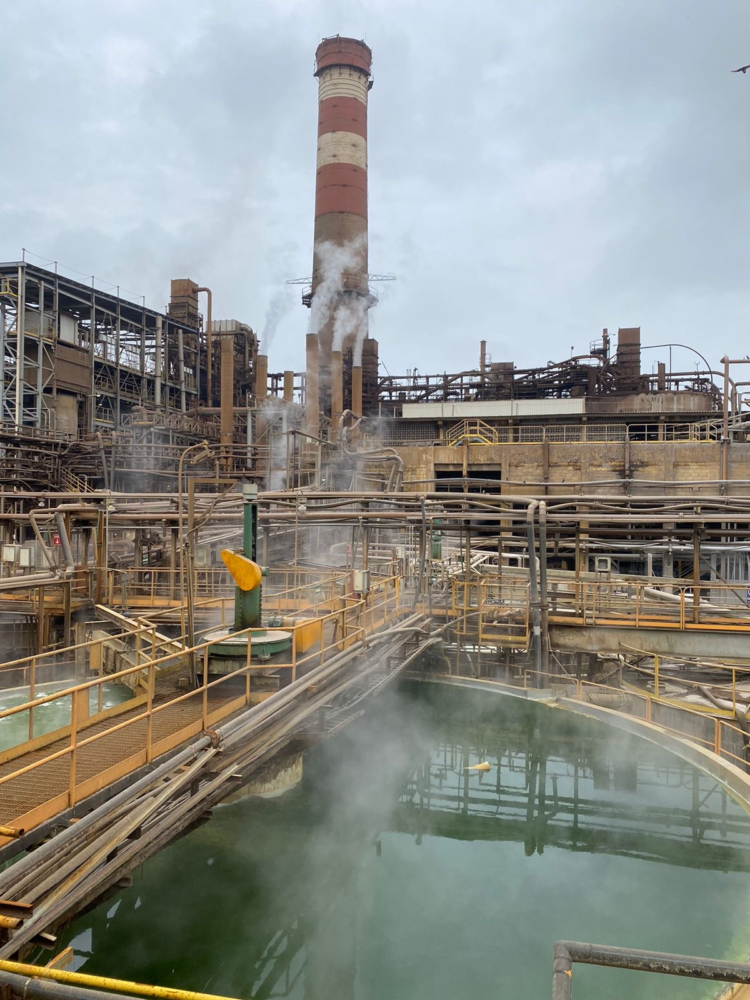
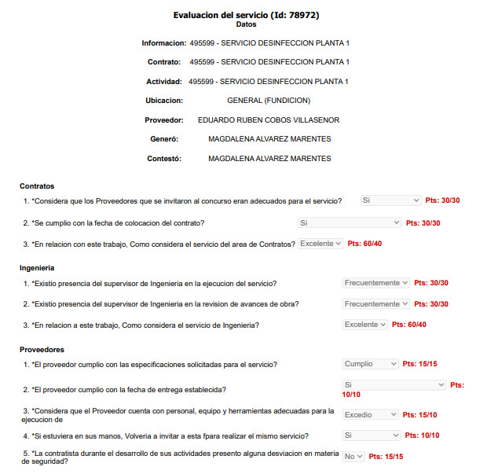
En la región donde Kumo Servicios tiene mayor presencia (Torreón, Coah. Mexico) Industrias Met-Mex Peñoles es un importante cliente, ya que impactan directamente en el PIB del país, puesto que se dedican a la minería y refinería de oro y plata. Mediante un importante proceso de concurso, logré consolidar la relación laboral con ellos, ofreciendo servicios de control de plagas y desinfección en sus instalaciones; tanto en oficinas como dentro de las naves industriales, logrando establecer protocolos de trabajo adaptados a las NOM's oficiales aplicables y las estrictas métricas de seguridad e higiene propias de la actividad del cliente.
Desempeño positivo
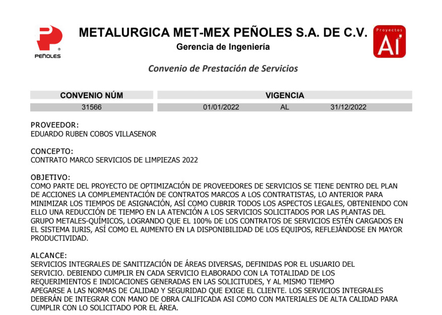
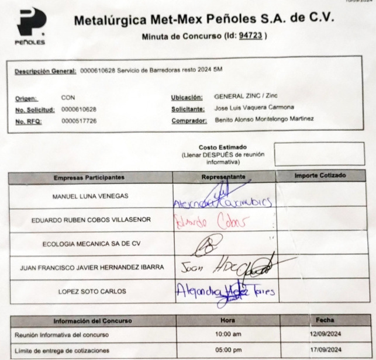
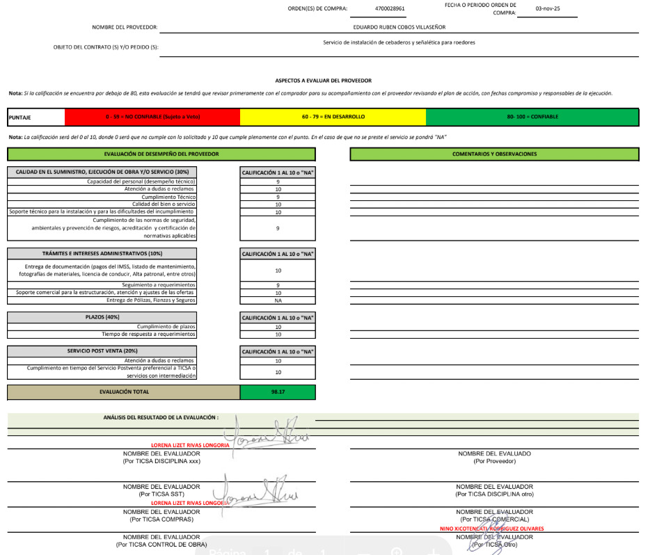
Mediante un estricto analisis incial de la situación de cada cliente, logré establecer métricas de desempeño y protocolos de trabajo de acuerdo a sus necesidades. Mismos que se traducen en evaluaciones anuales positivas y una fructífera relación comercial con importantes clientes de la región (sector industrial metalurgico, ganadero de producción lechera, plantas tratadoras de agua, CEDIS de empresas multinacionales, entre otros).
Seguimiento de ventas y aplicaciones

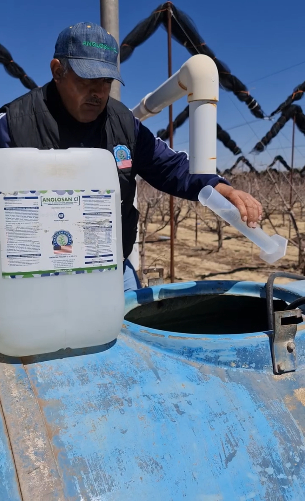

Dentro de los servicios de sanitización/desinfección, logré una importante alianza comercial con el laboratorio "American Pharma", consiguiendo la distribución de sus productos en la región norte del país; mismos que tienen un amplio rango de usos, incluyendo el uso agrícola. Por ello, con la dirección del área comercial, pude consolidar importantes relaciones con productores de manzana en la región de Cuauhtémoc, Chihuahua. Dandole seguimiento a sus pedidos e inquietudes, apoyado del departamento ténico y, ocasionalmente, supervisando la correcta aplicación y procesos de prueba.
Análisis situacional
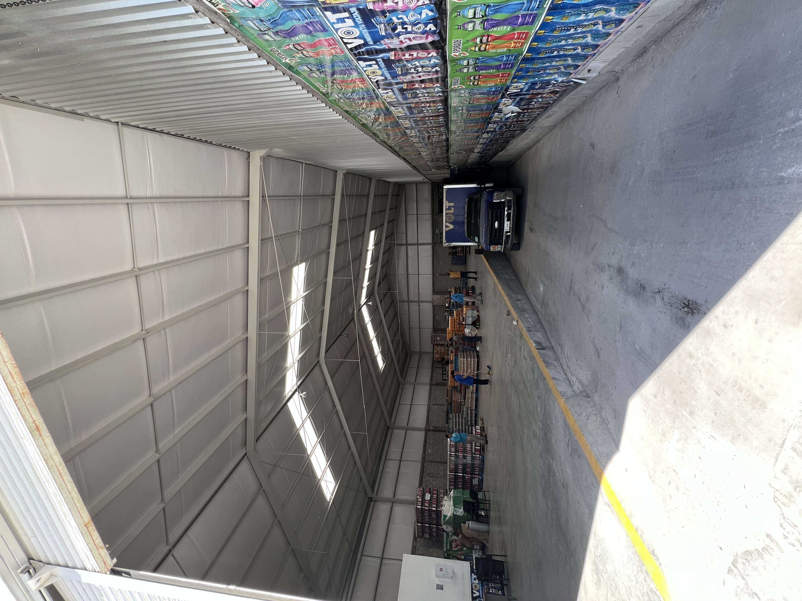
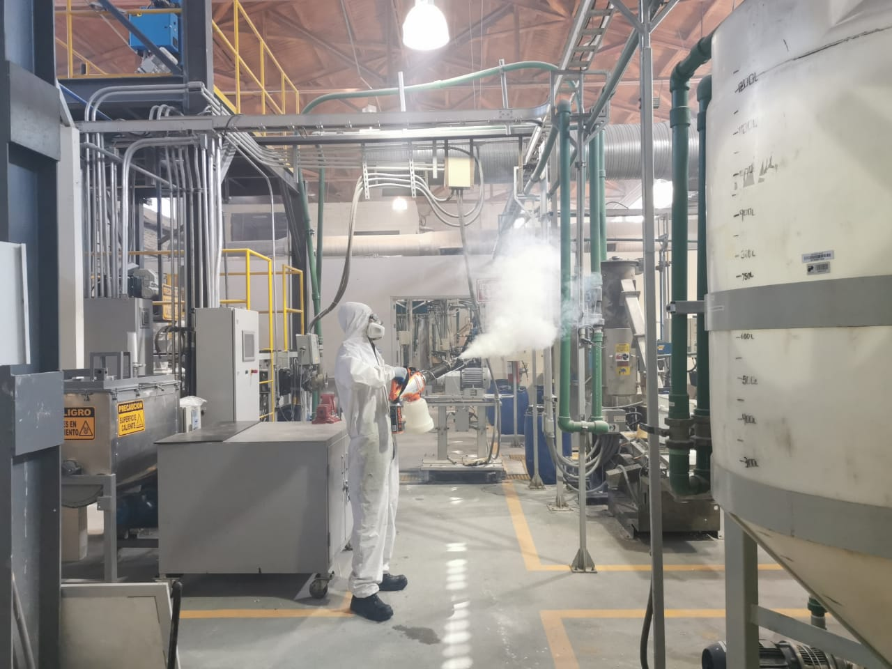

Soy fiel creyente de que es de suma importancia entender y darle la importancia correspondiente, al hecho de que naturaleza de cada negocio es diferente, así como sus actividades diarias y la manera en que tienen trazado el camino hacia sus metas y objetivos. Soy creyente de que los negocios son fructiferos cuando tenemos una visión de crecimiento conjunto. Tanto clientes como proveedores estamos en busqueda de mejora continua, que finalmente se traduce en productos y servicios de calidad para el consumidor final. La ética y el desempeño profesional, son de suma relevancia para generar negocios de éxito.
Habilidades & Certificaciones
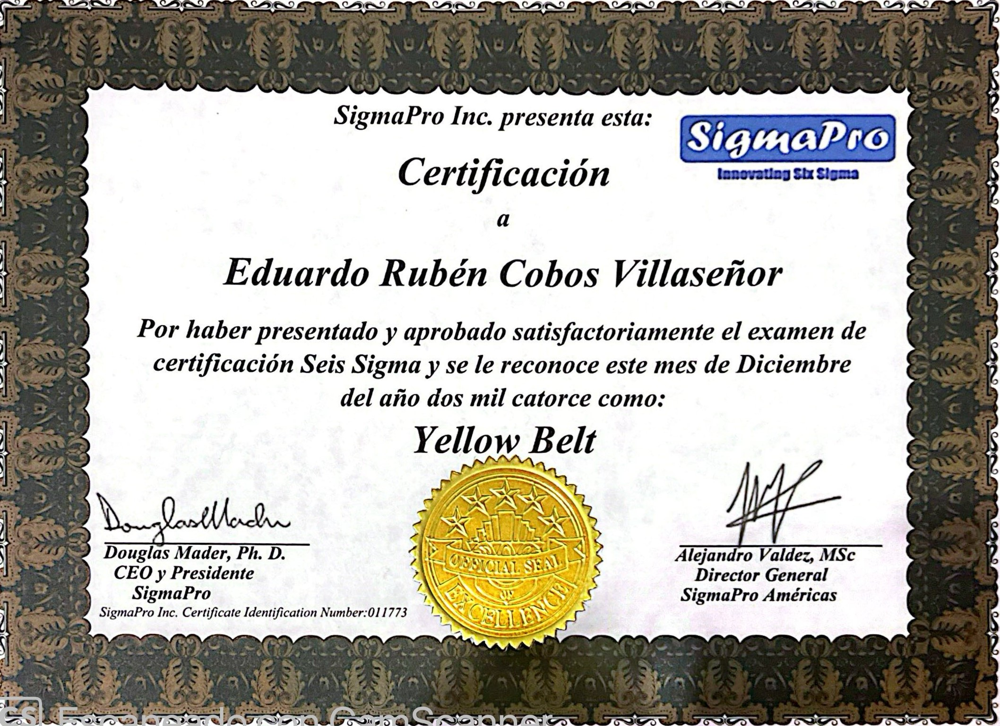
Six Sigma Yellow Belt
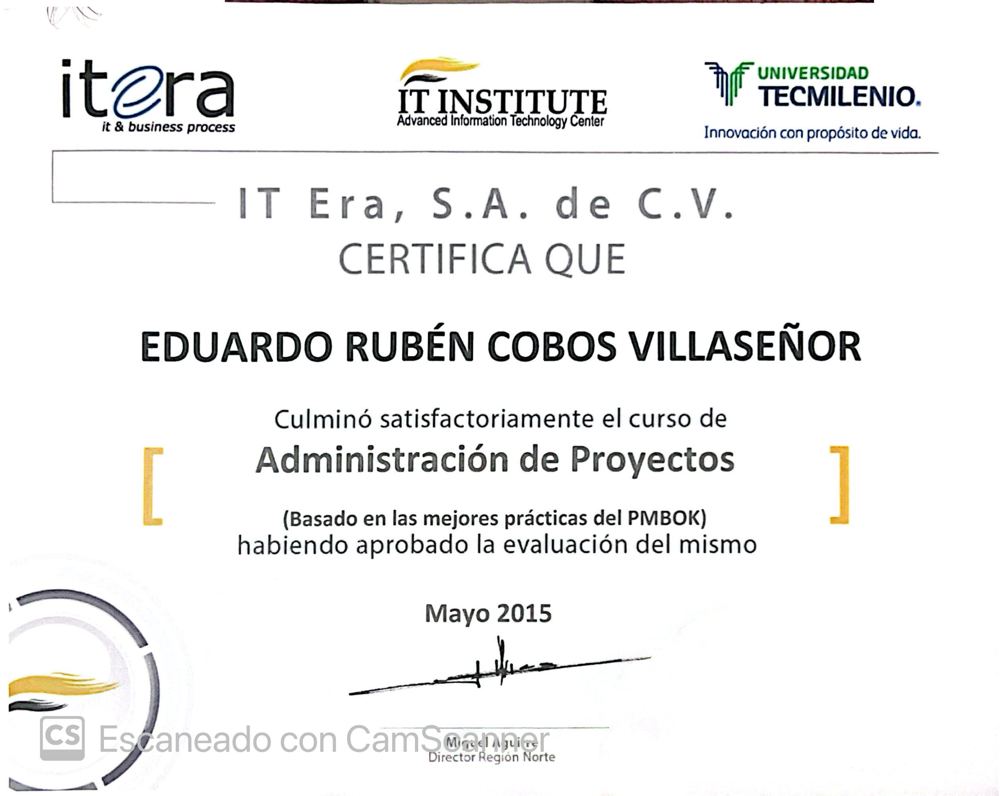
Project Management
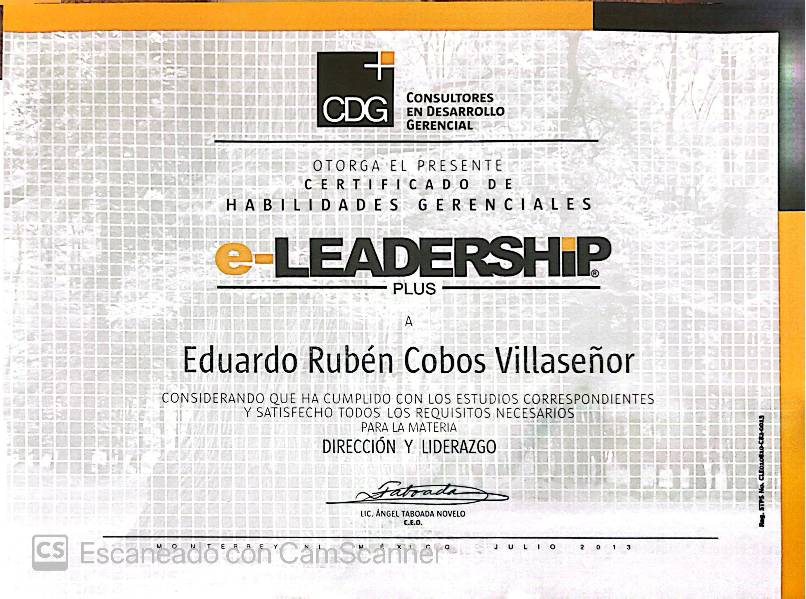
E-Leadership
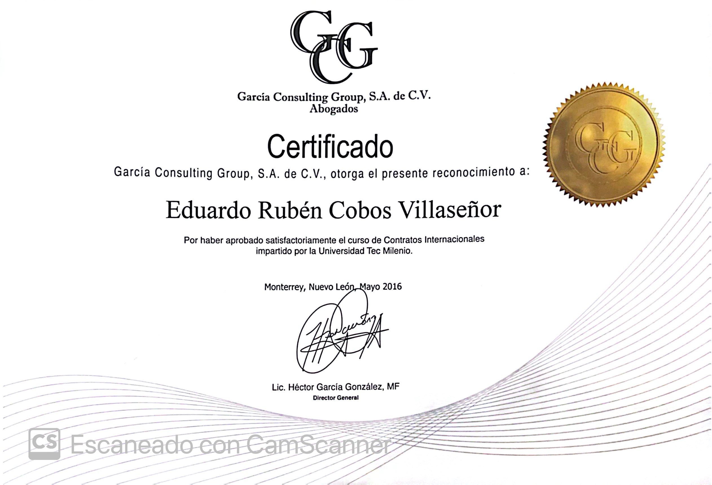
Contratos Internacionales
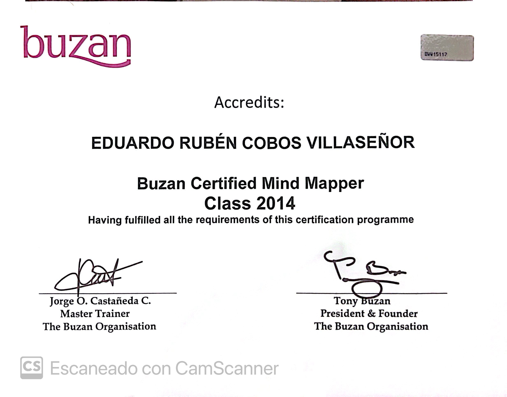
Mind Mapping
Contacto
Teléfono/Whatsapp: +52 (871) 761-6249